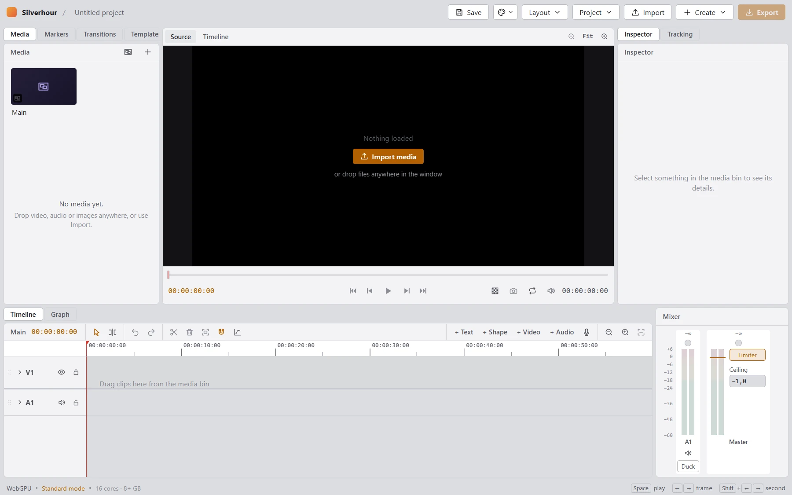
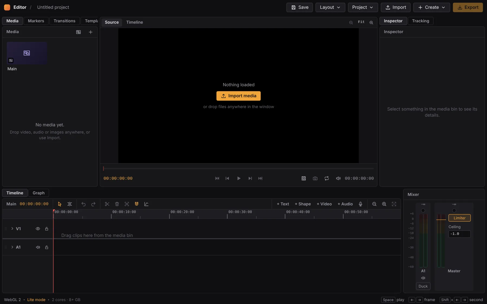
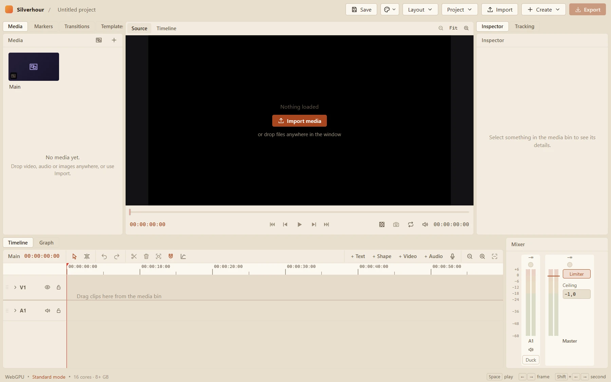

Willkommen auf meiner WebseiteWelcome to my Site
Ich studiere Medieninformatik im 2. Semester. Hier sind meine Projekte, vom Videoeditor bis zum Stimmgerät. Alle laufen ohne Installation und ohne Konto: einfach auf „Öffnen“ klicken.
I'm a second-semester Media Informatics student. These are my projects, from a video editor to an instrument tuner. They all run without installing anything or creating an account – just click “Open”.
Die meisten sind gemeinsam mit KI-Agenten wie Claude Code entstanden und sind noch nicht vollendet.
Die Repos werden bei größeren Veränderungen geupdated.
Most of them were built together with AI agents like Claude Code and are not yet finished.
The Repos get updated when bigger changes were made.



HauptprojektMain project In ArbeitWork in progress
Ein Videoeditor im Browser, gedacht als kostenlose Alternative zu After Effects oder der Studio-Version von DaVinci Resolve.
A video editor in the browser, meant as a free alternative to After Effects or the Studio version of DaVinci Resolve.
Zum Schreiben von Code und Texten
For writing code and text
HTML, CSS und JavaScript nebeneinander, mit Vorschlägen für alle drei Sprachen und einer Vorschau, in der sich Elemente direkt verschieben lassen.
HTML, CSS and JavaScript side by side, with suggestions for all three languages and a preview where you can drag elements around.
Ein Markdown-Editor mit Gliederung und Vorschau, alles in einer einzigen HTML-Datei.
A Markdown editor with an outline and a preview, all in a single HTML file.
Editor für Unitys UI Toolkit: UXML und USS mit Autovervollständigung, eingebauter Hilfe und einer Vorschau, die sich per Ziehen umbauen lässt.
An editor for Unity's UI Toolkit: UXML and USS with autocomplete, built-in help and a preview you can rearrange by dragging.
Zum Üben, Musikhören und Fotografieren
For practicing, listening and taking photos
Übungshilfe für Einsteiger an Gitarre, Klavier, Leier und Kalimba: Stimmgerät über das Mikrofon, Griffbilder, Lieder und ein Übungsmodus, der den gespielten Akkord erkennt.
A practice companion for beginners on guitar, piano, lyre and kalimba: a microphone tuner, chord charts, songs and a practice mode that recognizes the chord you play.
Musikplayer fürs Handy mit Playlists aus eigenen Dateien, Hintergrundgeräuschen wie Regen oder Wellen und einem 6-Band-Equalizer. Nichts wird hochgeladen.
A music player for your phone with playlists from your own files, background sounds like rain or waves and a 6-band equalizer. Nothing gets uploaded.
Web-Fassung meiner iPhone-App Lumen: Fotos aufnehmen oder öffnen und mit Reglern für Licht, Farbe und Details in Ebenen bearbeiten.
The web version of my iPhone app Lumen: take or open photos and edit them in layers with sliders for light, color and detail.